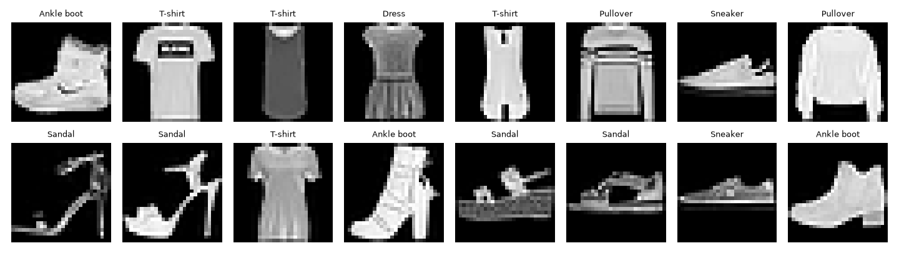
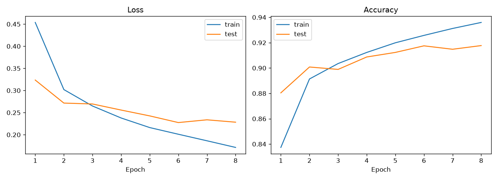
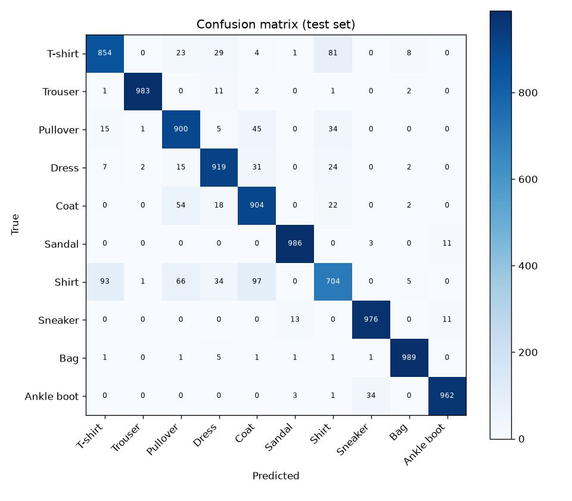
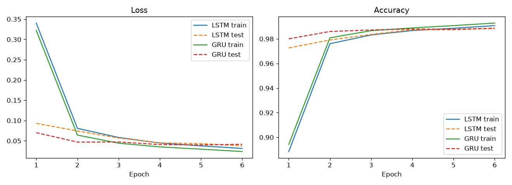
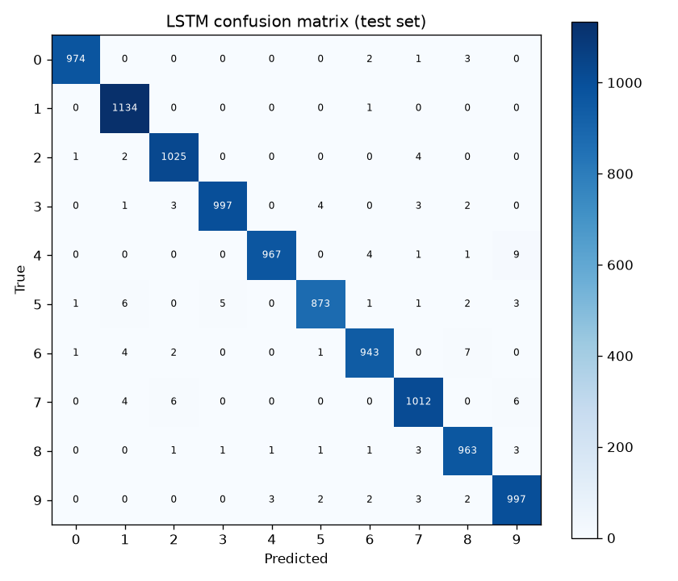

Overview
We built two deep learning models in Python using PyTorch and trained them on a GPU.
The first model is a CNN. It looks at a photo of a piece of clothing and says what it is, for example a shirt, a bag or a sneaker.
The second model is an RNN. We built two versions, an LSTM and a GRU. It looks at a handwritten number from 0 to 9 and says which number it is. It reads the image one row at a time, like reading lines of text.
The CNN got about 92% right, and both RNNs got about 99% right on pictures they had never seen before.
Fashion-MNIST
Sequential MNIST
Sequential MNIST
| Item | Details |
|---|---|
| Framework | PyTorch, trained on an NVIDIA GPU (CUDA) |
| Loss function | Cross-entropy |
| Optimizer | Adam (learning rate 0.001 for the CNN, 0.002 for the RNNs), batch size 128 |
| Evaluation | Accuracy, loss curves, confusion matrix, per-class precision / recall / F1 |
| Code files | cnn_fashion_mnist.py, rnn_lstm_mnist.py |
Part A: CNN Image Classification (Fashion-MNIST)
CNN stands for Convolutional Neural Network. It is the standard model for understanding images.
We used the Fashion-MNIST dataset. It has 70,000 small black-and-white photos of clothes in 10 types. We used 60,000 photos to train the model and kept 10,000 separate photos to test it. Here are some examples of the photos.
Dataset
Fashion-MNIST has 70,000 grayscale 28×28 images of clothing in 10 classes (60,000 for training, 10,000 for testing).

Architecture
This table shows how the model is built, step by step.
The photo goes into the first convolution layer. It has 32 small 3 by 3 filters that slide over the image and find simple patterns like edges and lines.
Batch normalization keeps the numbers in a stable range so training is faster. ReLU keeps only the useful signals. Max pooling shrinks the image to half its size, from 28 by 28 to 14 by 14, and keeps the strongest features.
The second block does the same with 64 filters. These find bigger shapes, like a collar, a sleeve or a shoe sole. The image is now 7 by 7.
Then we flatten everything into one list of 3,136 numbers and pass it through two fully connected layers. Dropout randomly switches off 30% of the neurons during training so the model does not just memorise the photos. The last layer gives a score for each of the 10 classes, and the highest score is the answer.
In total the model has about 420,000 parameters that it learns. The code below is the forward function, which is exactly the path described above.
| Layer | Operation | Output shape |
|---|---|---|
| Input | Grayscale image | 1 × 28 × 28 |
| Conv block 1 | Conv 3×3 (32 filters) → BatchNorm → ReLU → MaxPool 2×2 | 32 × 14 × 14 |
| Conv block 2 | Conv 3×3 (64 filters) → BatchNorm → ReLU → MaxPool 2×2 | 64 × 7 × 7 |
| Flatten | 3136 | |
| FC 1 | Linear → ReLU → Dropout (0.3) | 128 |
| FC 2 | Linear (class scores) | 10 |
Trainable parameters: 421,834
class CNN(nn.Module):
def forward(self, x):
x = self.pool(F.relu(self.bn1(self.conv1(x)))) # 32 x 14 x 14
x = self.pool(F.relu(self.bn2(self.conv2(x)))) # 64 x 7 x 7
x = torch.flatten(x, 1)
x = self.drop(F.relu(self.fc1(x)))
return self.fc2(x)
Training progress (8 epochs)
We trained the model for 8 epochs. One epoch means the model has seen all 60,000 training photos once. We used the Adam optimizer and cross-entropy loss, which measures how wrong the predictions are.
In this table you can see the loss going down and the accuracy going up every epoch. After the first epoch it was already 88% correct on the test photos, and by the end it reached 91.8%.
In the graph, the training and test lines stay close together. Training accuracy is 93.6% and test accuracy is 91.8%. That small gap means the model is not overfitting much. It has really learned, not just memorised.
| Epoch | Train loss | Train acc | Test loss | Test acc |
|---|---|---|---|---|
| 1 | 0.4538 | 83.74% | 0.3236 | 88.04% |
| 2 | 0.3020 | 89.13% | 0.2715 | 90.08% |
| 3 | 0.2649 | 90.35% | 0.2695 | 89.89% |
| 4 | 0.2378 | 91.23% | 0.2558 | 90.87% |
| 5 | 0.2161 | 91.99% | 0.2425 | 91.23% |
| 6 | 0.2011 | 92.57% | 0.2275 | 91.75% |
| 7 | 0.1863 | 93.12% | 0.2337 | 91.48% |
| 8 | 0.1713 | 93.59% | 0.2283 | 91.77% |

Per-class results (test set)
This table shows how well the model does on each type of clothing. Precision means: when the model says "shirt", how often is it really a shirt. Recall means: out of all the real shirts, how many did the model find. F1 combines the two.
Trousers, bags, sandals and sneakers are almost perfect, around 97 to 99%, because their shapes are very different from everything else.
The hardest class is Shirt, highlighted in red. The model found only 70% of the shirts.
| Class | Precision | Recall | F1-score |
|---|---|---|---|
| T-shirt | 0.8795 | 0.8540 | 0.8666 |
| Trouser | 0.9959 | 0.9830 | 0.9894 |
| Pullover | 0.8499 | 0.9000 | 0.8742 |
| Dress | 0.9001 | 0.9190 | 0.9095 |
| Coat | 0.8339 | 0.9040 | 0.8676 |
| Sandal | 0.9821 | 0.9860 | 0.9840 |
| Shirt | 0.8111 | 0.7040 | 0.7537 |
| Sneaker | 0.9625 | 0.9760 | 0.9692 |
| Bag | 0.9812 | 0.9890 | 0.9851 |
| Ankle boot | 0.9776 | 0.9620 | 0.9698 |

"Shirt" is the hardest class (70.4% recall). At 28×28 resolution it is often confused with T-shirt, Pullover and Coat, which have similar shapes.
This is the confusion matrix. Each row is the real class and each column is what the model guessed. The dark diagonal boxes are the correct answers, and every box off the diagonal is a mistake.
If you look at the Shirt row, most mistakes go to T-shirt, Pullover and Coat. That makes sense, because at only 28 by 28 pixels these items look almost the same. Even a person would find some of them hard.
Part B: RNN Sequence Classification (LSTM and GRU on Sequential MNIST)
RNN stands for Recurrent Neural Network. RNNs are made for data that comes in order, like words in a sentence, speech, or stock prices over time. What makes them special is memory: after each step, the model keeps a note of what it has seen so far. This note is called the hidden state.
We used the MNIST dataset of handwritten digits from 0 to 9, again 60,000 for training and 10,000 for testing.
A picture does not come in order, so we turned it into a sequence. The model reads the picture one row at a time from top to bottom. Each picture is 28 rows tall, so the model takes 28 steps. For example, with a 7, it first sees a flat line at the top, then a slanted line going down. After the last row, it uses its memory to decide which digit it is.
Idea
Each 28×28 handwritten digit is treated as a sequence of 28 time steps, one row of 28 pixels per step. The recurrent network reads the rows one at a time, carries information forward in its hidden state, and classifies the digit from the hidden state at the final step.
Architecture
| Layer | Details |
|---|---|
| Input | 28 time steps × 28 features |
| Recurrent layers | 2 stacked LSTM (or GRU) layers, 128 hidden units, dropout 0.2 |
| Output | Linear layer on the last time step → 10 classes |
| Stabilisation | Gradient clipping (max norm 1.0) to prevent exploding gradients |
class RNNClassifier(nn.Module):
def forward(self, x): # x: (batch, 1, 28, 28)
x = x.squeeze(1) # (batch, 28 steps, 28 features)
out, _ = self.rnn(x) # (batch, 28, 128)
return self.fc(out[:, -1, :]) # last time step -> class scores
The model has two recurrent layers stacked on top of each other, each with 128 memory units. At the end, a final layer turns the memory into a score for each of the 10 digits.
We also used gradient clipping. RNNs can sometimes take very large update steps and become unstable during training, so we limit the size of each step.
In the code, the image is reshaped into 28 steps of 28 pixels, passed through the RNN, and we take the output from the last step to make the prediction.
LSTM vs GRU gates
We tried two types of RNN, the LSTM and the GRU. A basic RNN has a problem: by the time it reaches the last row, it has mostly forgotten the first rows. This is called the vanishing gradient problem.
LSTM and GRU fix this with gates, which are small switches that decide what to remember and what to forget. The LSTM has three gates, input, forget and output, plus a separate memory cell. The GRU is a simpler version with only two gates, update and reset.
| LSTM | GRU | |
|---|---|---|
| Gates | Input, forget, output (+ separate cell state) | Update, reset (no separate cell state) |
| Purpose | Both solve the vanishing-gradient problem of a plain RNN by controlling what is kept or forgotten | |
Training curves (6 epochs each)
We trained both models for 6 epochs with the Adam optimizer. In this graph, the solid lines are training and the dashed lines are testing. Both LSTM and GRU learn very quickly, and their lines are almost on top of each other. Both end at about 99% accuracy.

LSTM per-class results (test set)
| Digit | Precision | Recall | F1-score |
|---|---|---|---|
| 0 | 0.9969 | 0.9939 | 0.9954 |
| 1 | 0.9852 | 0.9991 | 0.9921 |
| 2 | 0.9884 | 0.9932 | 0.9908 |
| 3 | 0.9940 | 0.9871 | 0.9906 |
| 4 | 0.9959 | 0.9847 | 0.9903 |
| 5 | 0.9909 | 0.9787 | 0.9848 |
| 6 | 0.9885 | 0.9843 | 0.9864 |
| 7 | 0.9844 | 0.9844 | 0.9844 |
| 8 | 0.9827 | 0.9887 | 0.9857 |
| 9 | 0.9794 | 0.9881 | 0.9837 |

Here are the LSTM results for each digit. Every digit is above 97%. The hardest digit to find was 5, with about 97.9% recall. You can see in the confusion matrix which digits it was mixed up with.
In the confusion matrix, almost everything is on the diagonal, which means very few mistakes out of 10,000 test images.
Comparison
This table compares all three models. The most interesting result is that the GRU got the same accuracy as the LSTM, 98.9%, with about 25% fewer parameters, 161 thousand compared to 214 thousand. That is because the GRU has fewer gates. So for this task, the GRU is the more efficient choice.
One important point: the CNN and RNN were tested on different datasets. Clothing is harder to recognise than digits, so we should not say the RNN is better than the CNN just because its number is higher. For images, the CNN is still the natural choice, because it looks at nearby pixels together.
| Model | Dataset | Parameters | Epochs | Test accuracy | Test loss |
|---|---|---|---|---|---|
| CNN | Fashion-MNIST | 421,834 | 8 | 91.77% | 0.2283 |
| LSTM | Sequential MNIST | 214,282 | 6 | 98.85% | 0.0379 |
| GRU | Sequential MNIST | 161,034 | 6 | 98.87% | 0.0414 |
The GRU reaches the same accuracy as the LSTM with about 25% fewer parameters, because it has fewer gates. The CNN and RNN results are on different datasets, so their accuracies should not be compared directly; Fashion-MNIST is a harder task than handwritten digits.
Conclusion and Future Work
The CNN learned to recognise clothing with 92% accuracy, using filters that find local patterns in the image. The LSTM and GRU learned to recognise handwritten digits with 99% accuracy by reading the image row by row and using their memory.
In the future, we could improve the results with data augmentation, which means creating more training images by flipping or rotating them, and with deeper networks or more training. We could also test the RNN on real sequential data like text or time series, which is what RNNs are mainly used for.
- CNNs learn local spatial features (edges, textures) with shared filters, which makes them well suited to images.
- RNNs (LSTM, GRU) process data step by step with a memory (hidden state), which suits sequential data such as text and time series; here an image was processed row by row.
- The small train/test gap for the CNN (93.6% vs 91.8%) shows only slight overfitting, kept in check by BatchNorm and Dropout.
- Possible improvements: data augmentation, deeper CNNs, more epochs, and bidirectional LSTMs.